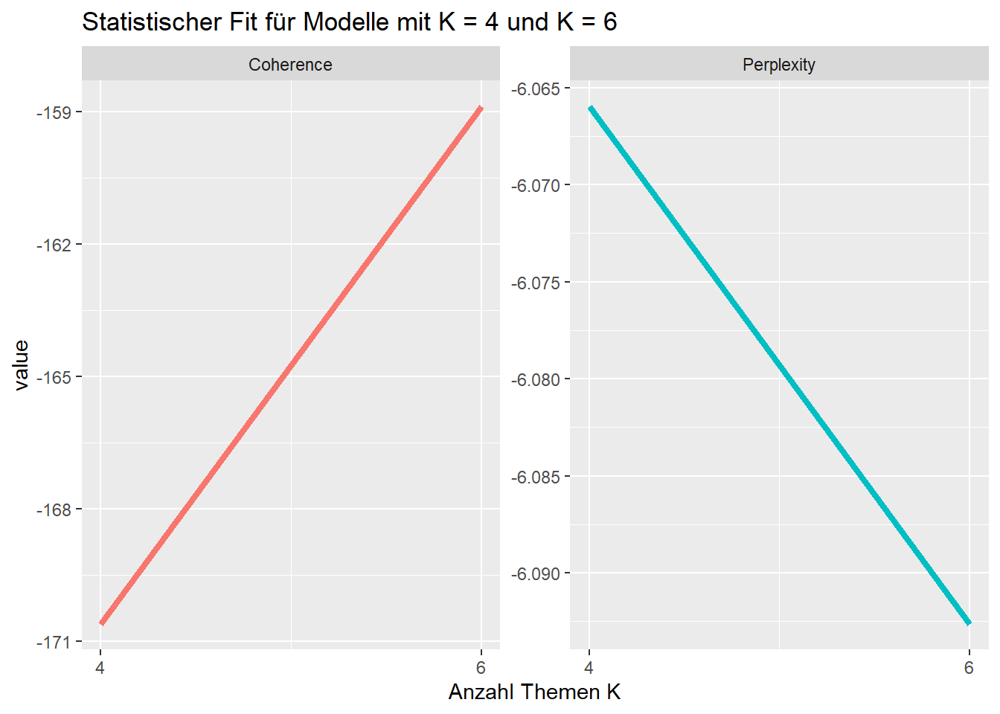
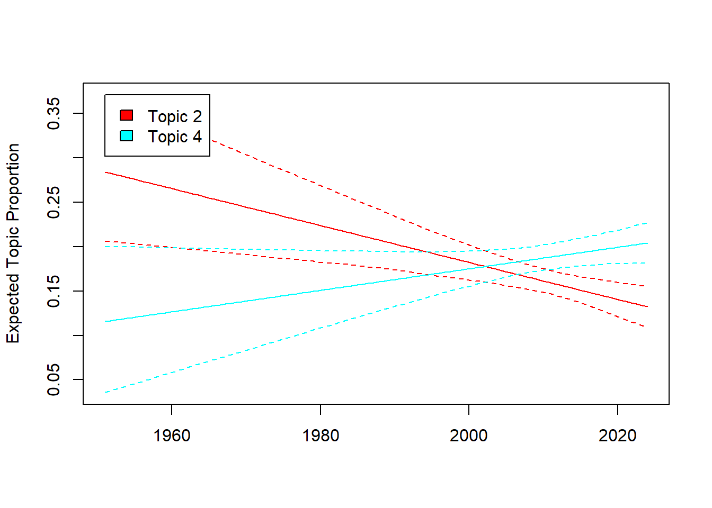

#install.packages("tidyverse)
#install.packages("RCurl")
#install.packages("quanteda")
#install.packages("stm")
#install.packages("reshape2")
library("tidyverse")
library("RCurl")
library("quanteda")
library("stm")
library("reshape2")Sitzung 4: Topic Modeling
1. Pakete laden und Daten einlesen
Zunächst installieren alle Pakete, die wir für diese Sitzung brauchten (z.B. tidyverse). Ihr braucht install.packages() nur, wenn ihr die Pakete im Methodencafe noch nicht installiert hattet.
Neu hinzugekommen seit dem Methodencafe ist das stminsights-Paket, das ihr neu installieren müsstest.
Wenn das bei euch nicht klappt, ist das kein Problem - wir brauchen das Paket nur für eine zusätzliche Analyse am Ende.
install.packages("stminsights")
library("stminsights")Nun lesen wir die Daten wieder ein und führen die bereits erlernten Preprocessing-Schritte, inkl. der Transformation in eine Document-Feature-Matrix, aus:
# Daten laden
url <- getURL("https://raw.githubusercontent.com/valeriehase/textasdata-ms/main/data/data_tvseries.csv")
data <- read.csv2(text = url)
# Preprocessing
tokens <- tokens(data$Description,
what = "word", #Tokenisierung, hier zu Wörtern als Analyseeinheit
remove_punct = TRUE, #Entfernung von Satzzeichen
remove_numbers = TRUE) %>% #Entfernung von Zahlen
# Kleinschreibung
tokens_tolower() %>%
# Entfernung von Stoppwörtern
tokens_remove(stopwords("english")) %>%
# Stemming
tokens_wordstem()
# Text-as-Data Repräsentation als Document-Feature-Matrix
dfm <- tokens %>%
dfm() %>%
# Relative pruning
dfm_trim( min_docfreq = 0.005,
max_docfreq = 0.99,
docfreq_type = "prop",
verbose = TRUE) Jetzt sind wir bereit für das Topic Modeling!
2. Anzahl Themen K
Relevante Entscheidungen für ein Topic-Modeling umfassen u.a. die Anzahl von Themen K, die das Modell identifizieren soll (mit anderen Aspekten, wie der Wahl des Algorithmus oder weiterer Hyperparameter, beschäftigen wir uns heute nicht).
Zunächst müssen wir unsere dfm in ein stm-Objekt umwandeln, damit das stm-Paket, das wir für die Berechnung des Topic Models brauchen, das Datenformat versteht.
# DFM in STM-Objekt umwandeln
dfm_stm <- convert(dfm, to = "stm")2.1 Statistischer Fit
Ein Kriterium für die Entscheidung bzgl. K kann die der statistische Fit sein.
Mit der Funktion searchK()aus dem stm-Paket berechnen wir den statistischen Fit hier beispielhaft für Modelle mit 4 vs. 6 Themen.
Das Argument verbose, das wir hier auf TRUE setzen, führt dazu, dass uns R alle iterativen Berechnungen ausgibt. Wir können also nachverfolgen, was der Computer gerade berechnet.
# dfm_stm$documents: Welche Dokumente nutzen wir?
# dfm_stm$vocab: Welche Features nutzen wir?
stat_fit <- searchK(dfm_stm$documents, dfm_stm$vocab,
K = c(4,6), verbose = TRUE)Um das Ergebnis zu interpretieren, ploten wir die Daten. Hierfür nutzen wir das Packet ggplot2 aus dem tidyverse-Universum.
# Wir speichern die Ergebnisse im Objekt "Plot" ab
plot <- data.frame("K" = c(4, 6),
#Kohärenz: Je höher, desto besser
"Coherence" = unlist(stat_fit$results$semcoh),
#Perplexität: Je niedriger, desto besser
"Perplexity" = unlist(stat_fit$results$heldout))
# Wir wandeln das Format zu einem "long format" um
plot <- melt(plot, id = c("K"))
# Plot erstellen
ggplot(plot, aes(K, value, color = variable)) +
geom_line(linewidth = 1.5, show.legend = FALSE) +
scale_x_continuous(breaks = c(4, 6)) +
facet_wrap(~ variable, scales = "free_y") +
labs(x = "Anzahl Themen K",
title = "Statistischer Fit für Modelle mit K = 4 und K = 6")
Als nächstes schauen wir auf die Interpretierbarkeit der Themen!
2.2 Inhaltliche Interpretierbarkeit
Eine weitere Grundlage, um sich für die Anzahl der Themen zu entscheiden, sind Top Features und Top Documents: Welches Modell ist im Vergleich besser interpretierbar?
Dafür müssen zunächst die einzelnen Modelle mit K = 4 bzw. K = 6 berechnet werden.
# Model mit K = 4 berechnen
model_4K <- stm(documents = dfm_stm$documents,
vocab = dfm_stm$vocab,
K = 4)
# Model mit K = 6 berechnen
model_6K <- stm(documents = dfm_stm$documents,
vocab = dfm_stm$vocab,
K = 6)2.2.1 Top Features
Schauen wir uns an, wie interpretierbar die Modelle auf Basis ihrer Features wirken:
Um die Top Features für jedes Modell zu berechnen, nutzen wir die labelTopics()-Funktion aus dem stm-Paket.
Als Argumente bestimmen wir ein Modell sowie über das n-Argument, das nur die zehn wichtigsten Features ausgegeben werden sollen. Für den anschliessenden Vergleich speichern wir die Top Features im Objekt topics_4 bzw. topics_6 ab:
# Top Features für K = 4
topics_4K <- labelTopics(model_4K, n = 10)
# Nur Top-10 Features nach Frex-Gewichtung, welche besser interpretierbar ist
# Gewichtet Features nach Kohärenz und Exklusivität
topics_4K <- data.frame("features" = t(topics_4K$frex))
# Benennung & Ausgabe
colnames(topics_4K) <- paste("Topics", c(1:4))
topics_4K Topics 1 Topics 2 Topics 3 Topics 4
1 crime find life mysteri
2 human seri live discov
3 detect struggl new boy
4 adventur chang friend lead
5 crimin name citi agent
6 case everi school angel
7 solv polit york dark
8 use head togeth mother
9 futur seem high surviv
10 alien embark person children# Top Features für K = 6
topics_6K <- labelTopics(model_6K, n = 10)
# Nur Top-10 Features nach Frex-Gewichtung, welche besser interpretierbar ist
# Gewichtet Features nach Kohärenz und Exklusivität
topics_6 <- data.frame("features" = t(topics_6K$frex))
#Benennung & Ausgabe
colnames(topics_6) <- paste("Topics", c(1:6))
topics_6 Topics 1 Topics 2 Topics 3 Topics 4 Topics 5 Topics 6
1 polic best vampir human comedi american
2 crime school famili alien show war
3 detect new teen earth togeth serial
4 profession boy brother planet various dream
5 investig hero differ futur work killer
6 stori york son struggl anim plan
7 person mother epic fight name cia
8 case return demon galaxi featur turn
9 special high world space everyth drug
10 polit troubl navig last lead beginDie Top Features geben bereits einen ersten Eindruck, worum es sich inhaltlich bei den Topics handelt.
2.2.1 Top Documents
Zusätzlich helfen die Top Documents eines Themas, dieses zu interpretieren. Um diese zu finden, nutzen wir die findThoughts()-Funktion des stm-Pakets.
Als Argumente werden wieder das jeweilige Modell, die Serienbeschreibungen aus unserem Dataframe via daten_df$Description, das zu untersuchende Topic, hier Topic 1, und die Anzahl der zu identifizierenden Top Documents, hier drei, eingegeben.
Schauen wir Topic 1 an:
findThoughts(model_4K, data$Description, topics = 1, n = 3)
Topic 1:
Detective Jane Rizzoli and Chief Medical Examiner Dr. Maura Isles team up to solve crimes in Boston.
An elite unit, led by an ex-homicide cop, which is linked to the Miami-Dade Police Department, uses all possible resources and skills at their disposal to solve complex crimes in cross-cultural Miami.
The further adventures in time and space of the alien adventurer known as the Doctor and his companions from planet Earth.Die Top Documents zeigen, ähnlich wie die Top Features, dass Topic 1 Krimi-Serien zusammenfasst. Für eine Evaluierung der Themen müssen dann für beide Modelle und alle jeweiligen Themen die Top Documents ausgegeben und die Ergebnisse verglichen werden.
2.3. Rank-1 Metrik
Mit Hilfe der Rank-1 Metrik lässt sich zuletzt zeigen, wie oft ein Thema als Hauptthema vorkommt. Hier wird jedem Dokument ein einziges Hauptthema zugeordnet - nämlich das, für welches das Dokument laut der Document-Topic-Matrix die höchste bedingte Wahrscheinlichkeit hat.
So liessen sich Themen identifizieren, die z. B. wenig prävalent und damit ggf. irrelevant sind. Auch lässt sich nachverfolgen, wie sich Themen über Modelle mit z. B. mehr K in mehrere Themen “aufsplitten”.
Im ersten Schritt berechnen wir die Document-Topic-Matrix, in der für jeden Dokument zusammengefasst wird, welches Thema wie gut zum Dokument passt. Das machen wir mit der make.dt()Funktion aus dem stm-Paket.
theta_4K <- make.dt(model_4K)
theta_6K <- make.dt(model_6K)
#Schauen wir uns kurz beispielhaft die Matrix an:
theta_4K %>%
head() docnum Topic1 Topic2 Topic3 Topic4
<int> <num> <num> <num> <num>
1: 1 0.2663954 0.2620603 0.2840283 0.1875160
2: 2 0.3234499 0.1736692 0.2082024 0.2946784
3: 3 0.1401247 0.1727312 0.1448235 0.5423207
4: 4 0.1237850 0.1137826 0.6349453 0.1274870
5: 5 0.1694126 0.1476420 0.3017674 0.3811779
6: 6 0.2748651 0.1791878 0.2271607 0.3187864Jetzt nehmen wir diese Matrix und ordnen jedem Dokument das Thema mit der höchsten Prävalenz zu.
# Zuerst erstellen wir zwei leere Spalten in unserem Dataframe data
data <- data %>%
# Leere Variable für Hauptthema, wird später "aufgefüllt"
mutate(Rank1_K4 = NA,
Rank1_K6 = NA)
# Berechnung von Rank-1 Metrik
for (i in 1:nrow(data)){ # Schleife: Für jede nachfolgende Zeile...
# Bestimme Hauptthema für K = 4
# Wähle alle Spalten der Document-Topic-Matrix aus (ohne die erste, die nur doc_id enthält)
column <- theta_4K[i,-1]
# Bestimmung des Hauptthemas (Spalte mit dem höchsten Wert)
maintopic <- colnames(column)[which(column == max(column))]
# Zuweisung des Hauptthemas zur entsprechenden Zeile
data$Rank1_K4[i] <- maintopic
rm(column, maintopic)
# Bestimme Hauptthema für K = 6
# Wähle alle Spalten der Document-Topic-Matrix aus (ohne die erste, die nur doc_id enthält)
column <- theta_6K[i,-1]
# Bestimmung des Hauptthemas (Spalte mit dem höchsten Wert)
maintopic <- colnames(column)[which(column == max(column))]
# Zuweisung des Hauptthemas zur entsprechenden Zeile
data$Rank1_K6[i] <- maintopic
rm(column, maintopic)
}Schauen wir uns an, wie häufig jedes Thema bei K = 4 vorkommt!
# Erzeugung einer Häufigkeitstabelle für Rank-1 Themen bei K = 4
data %>%
# absolute Anzahl jedes Themas
count(Rank1_K4) %>%
# Ausgabe in Prozent (perc)
mutate(perc = prop.table(n)*100,
perc = round(perc, 2)) Rank1_K4 n perc
1 Topic1 190 21.11
2 Topic2 40 4.44
3 Topic3 311 34.56
4 Topic4 359 39.89Und jetzt das gleiche für K = 6
# Erzeugung einer Häufigkeitstabelle für Rank-1 Themen bei K = 6
data %>%
# absolute Anzahl jedes Themas
count(Rank1_K6) %>%
# Ausgabe in Prozent (perc)
mutate(perc = prop.table(n)*100,
perc = round(perc, 2)) Rank1_K6 n perc
1 Topic1 147 16.33
2 Topic2 116 12.89
3 Topic3 189 21.00
4 Topic4 197 21.89
5 Topic5 139 15.44
6 Topic6 112 12.44Die Ergebnisse zeigen, dass bei K = 6 die Verteilung der Dokumente wesentlich gleichmäßiger ausfällt.
Für eine endgültige Entscheidung von K sollten diese Metriken für deutlich mehr als zwei Ks ausgegeben werden.
In diesem Fall deuten die ersten Ergebnisse darauf hin, dass ein Modell mit 6 Themen den TV-Seriendatensatz ggf. besser abbildet als ein Modell mit 4 Themen.
3. Analyse
3.1 Einfluss unabhängiger Variablen
Für eine beispielhafte Analyse nehmen wir nun an, dass wir uns für K = 6 Themen entschieden haben. Mit dem stm-Paket können wir als weiteren Analyseschritt eine unabhängige Variable einzubeziehen, um die Prävalenz (prevalence-Argument) oder den Inhalt (content-Argument) von Themen zu modellieren:
Gehen wir als Arbeitshypothese davon aus, dass das Jahr, in dem eine Serie zuerst ausgestrahlt wurde, einen Einfluss auf das dort beschriebene Thema hat.
Beispielsweise könnte es sein, dass unterschiedliche Jahre von unterschiedlichen “Genres” geprägt wurden.
Zunächst nutzen wir wieder reguläre Ausdrücke, um das Erstausstrahlungs-Jahr aller Serien zu identifizieren. Bitte beachtet dabei, dass wir fehlende Werte einfach mit dem Mittelwert von Start_Year ersetzen. Das würde man normalerweise nicht machen, aber fehlende Werte für unabhängige Variablen sind im stm-Paket höllisch schwierig zu handeln - das tun wir uns heute nicht an.
data <- data %>%
# Wir entfernen alle nicht-numerische Zeichen, um "-" zu entfernen
mutate(Year_Start = gsub("[^0-9]", "", Year),
# Wir beschränken uns nur auf die ersten 4 Jahre
Year_Start = substr(Year_Start, 1, 4),
# Wir verwandeln das ganze in eine numerische Variable
Year_Start = as.numeric(Year_Start),
#Wir ersetzen fehlende Werte mit dem Mittelwert (2010)
Year_Start = replace(Year_Start,
is.na(Year_Start),
2010))
#Ausgabe der ersten Zeilen
data %>%
#Reduktion auf weniger Variablen
select(Title, Year, Year_Start) %>%
#Ausgabe der ersten Zeilen
head() Title Year Year_Start
1 1. Game of Thrones 2011–2019 2011
2 2. Breaking Bad 2008–2013 2008
3 3. Stranger Things 2016–2025 2016
4 4. Friends 1994–2004 1994
5 5. The Walking Dead 2010–2022 2010
6 6. Sherlock 2010–2017 2010Dann nehmen wir die Variable Year_Start als unabhängige Variable in unser Modell auf, um die Prävalenz von Themen zu modellieren:
# Wir lassen das angepasste Modell laufen
model_6K_year <- stm(documents = dfm_stm$documents,
vocab = dfm_stm$vocab,
K = 6,
prevalence = ~ Year_Start, #neu!
data = data)Jetzt können wir mit der Funktion estimateEffect() aus dem stm-Paket berechnen, inwiefern das Erscheinungsjahr einer Serie einen Einfluss auf das dort behandelte Thema hat:
effect <- estimateEffect(formula = ~ Year_Start,
stmobj = model_6K_year,
metadata = data)Diesen Effekt können wir nun auch grafisch darstellen. Bsp. wollen wir wissen: Hat das Erscheinungsjahr einen Effekt darauf, wie häufig Serien z.B. Drama (Topic 2) vs. Sci-Fi (Topic 4) darstellen?
Schauen wir uns kurz die Themen an:
topics_6 %>%
select(`Topics 2`, `Topics 4`) Topics 2 Topics 4
1 best human
2 school alien
3 new earth
4 boy planet
5 hero futur
6 york struggl
7 mother fight
8 return galaxi
9 high space
10 troubl lastWir plotten die Ergebnisse und sehen - es scheint Unterschiede über die Zeit hinweg zu geben!
plot(effect, "Year_Start",
method = "continuous",
topics = c(2,4),
model = model_6K_year)
3.2 Visualisierung des Topic Models
Um unser Modell noch zu verstehen, können wir es zudem mit dem stminsights-Paket visualisieren. Dafür…
- erstellen wir zunächst das Objekt
out, indem alle wichtigen Infos gespeichert sind. Dieses benötigt dasstminsights-Paket. - starten wir dann die zugehörige Shiny-App mit
run_stminsights() - laden dort anschliessend unser R-Environment hoch.
Das R-Environment findet ihr unter Sitzung 4 zum Download (hier), solltest ihr bis hierhin Probleme gehabt haben, den Code auszuführen.
# Wir erstellen das Objekt out, in dem alle wichtigen Infos gespeichert sind
# Das stminsights-Paket benötigt dieses Format
out <- list(documents = dfm_stm$documents,
vocab = dfm_stm$vocab,
meta = dfm_stm$meta)
# Wir speichern das Environment ab, um es hochzuladen
save.image("Sitzung4.RDATA")
# Wir lassen die Shiny App laufen
run_stminsights()Aufgabe 1 üìå
Aufgabe 1.1 (Basis)
Könnt ihr testen, wie sich das Modell verändert, wenn wir mit K = 10 Serien arbeiten? Wird es besser oder schlechter interpretierbar?
# dfm_stm$documents: Welche Dokumente nutzen wir?
# dfm_stm$vocab: Welche Features nutzen wir?
stat_fit <- searchK(dfm_stm$documents, dfm_stm$vocab,
K = c(4, 6, 10))
# Wir speichern die Ergebnisse im Objekt "Plot" ab
plot <- data.frame("K" = c(4, 6, 10),
"Coherence" = unlist(stat_fit$results$semcoh),
"Perplexity" = unlist(stat_fit$results$heldout))
# Wir wandeln das Format zu einem "long format" um
plot <- melt(plot, id = c("K"))
# Plot erstellen
ggplot(plot, aes(K, value, color = variable)) +
geom_line(linewidth = 1.5, show.legend = FALSE) +
scale_x_continuous(breaks = c(4, 6, 10)) +
facet_wrap(~ variable, scales = "free_y") +
labs(x = "Anzahl Themen K",
title = "Statistischer Fit für Modelle mit K = 4, K = 6 und K = 10")
# Model mit K = 10 berechnen
model_10K <- stm(documents = dfm_stm$documents,
vocab = dfm_stm$vocab,
K = 10,
verbose = F)
# Top Features
#für K = 10
topics_10K <- labelTopics(model_10K, n = 10)
topics_10 <- data.frame("features" = t(topics_10K$frex))
colnames(topics_10) <- paste("Topics", c(1:10))
topics_10Aufgabe 1.2 (Fortgeschritten)
Könnt ihr mittels des Datensatzes zu Horoskopen testen, ob Zwillinge und Wassermänner andere Themen in ihren Horoskopen vorhergesagt kriegen?
# Daten laden
url <- getURL("https://raw.githubusercontent.com/valeriehase/textasdata-ms/main/data/data_horoscope.csv")
data <- read.csv2(text = url)
# Reduktion auf Daten von Zwillingen und Wassermännern
data <- data %>%
filter(Signs %in% c("AQUARIUS", "GEMINI"))
# Preprocessing
tokens <- tokens(data$Horoscope,
what = "word", #Tokenisierung, hier zu Wörtern als Analyseeinheit
remove_punct = TRUE, #Entfernung von Satzzeichen
remove_numbers = TRUE) %>% #Entfernung von Zahlen
# Kleinschreibung
tokens_tolower() %>%
# Entfernung von Stoppwörtern
tokens_remove(stopwords("english")) %>%
# Stemming
tokens_wordstem()
# Text-as-Data Repräsentation als Document-Feature-Matrix
dfm <- tokens %>%
dfm() %>%
# Relative pruning
dfm_trim(min_docfreq = 0.005,
max_docfreq = 0.99,
docfreq_type = "prop",
verbose = TRUE)
# DFM in STM-Objekt umwandeln
dfm_stm <- quanteda::convert(dfm, to = "stm")
# Berechnung eines Modells, hier probeweise mit K = 5 Themen
# Wir nutzen das Sternzeichen als unabhängige Variable
model_horoscope <- stm(documents = dfm_stm$documents,
vocab = dfm_stm$vocab,
K = 4,
prevalence = ~ Signs,
data = data,
verbose = F)
# Ein erster Blick in die Top Features
topics_horoscope <- labelTopics(model_horoscope, n = 10)
topics_horoscope <- data.frame("features" = t(topics_horoscope$frex))
colnames(topics_horoscope) <- paste("Topics", c(1:4))
topics_horoscope Topics 1 Topics 2 Topics 3 Topics 4
1 person feel though rather
2 financi peopl success keep
3 matter accept just go
4 improv like get may
5 well work friend sure
6 relationship give let quick
7 life ideal strong difficulti
8 now although far busi
9 care aquarian next way
10 situat practic away eye#Schauen wir uns den Effekt an
effect <- estimateEffect(formula = ~ Signs,
stmobj = model_horoscope,
metadata = data)
# Und visualisieren wir den Unterschied
plot(effect, "Signs",
method = "pointestimate",
topics = c(4),
model = model_horoscope)